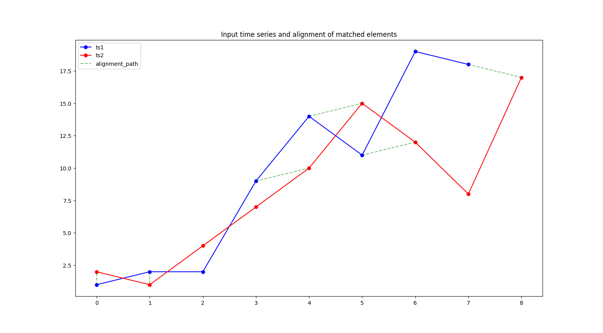
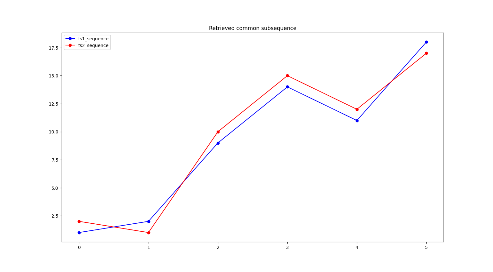
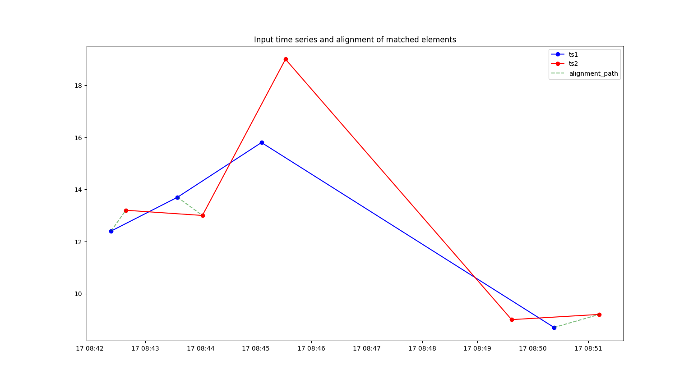
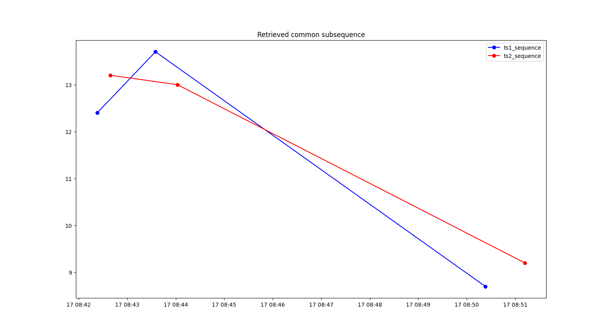

Getting Started¶
Installation¶
lcsspy supports any Python version starting from 3.9, and is OS independent.
Regular installation can be performed by running the following command.
pip install lcsspy
This will install lcsspy and its required dependencies.
If you want, you can install pytest as an optional dependency by running a slightly different command.
pip install lcsspy[tests]
This allows you to run existing tests, or write your own. Refer to the pytest documentation to learn more about running tests.
Usage¶
Discrete LCSS¶
Discrete LCSS measures similarity between time series with discrete time indexes. It’s the formulation introduced by Vlachos.
The following script matches elements that have a value difference smaller than 1.1, and that are at most 1 index position apart.
import matplotlib.pyplot as plt
import numpy as np
from lcsspy.lcss import discrete_lcss
ts1 = np.array([1, 2, 2, 9, 14, 11, 19, 18])
ts2 = np.array([2, 1, 4, 7, 10, 15, 12, 8, 17])
result = discrete_lcss(ts1=ts1, ts2=ts2, epsilon=1.1, delta=1, plot=True)
print(result.lcss_measure)
plt.show()
Running this code displays two figures. The first one plots the input time series and signals which elements were matched with a green line.
{kind=link}
The second figure plots only the elements from the input series that are part of the common subsequence. In this case, the common subsequence has length 6 since it contains six pairs of elements that were matched.
{kind=link}
This value is divided by the length of the shortest series to obtain the LCSS measure which belongs to the range \([0, 1]\).
The measure equals \(6/8\), which is printed to the console.
0.75
Continuous LCSS¶
Continuous LCSS deals with time series that have continuous time indexes (timestamps). It’s particularly useful when the two series are very irregular and present many gaps.
In the following example, elements are matched if they have a value difference smaller than 0.9, and their timestamps are at most 1 minute apart.
import matplotlib.pyplot as plt
import pandas as pd
from lcsspy.lcss import continuous_lcss
ts1 = pd.Series(
[12.4, 13.7, 15.8, 8.7],
index=pd.DatetimeIndex(
[
"2023-11-17 08:42:23",
"2023-11-17 08:43:35",
"2023-11-17 08:45:06",
"2023-11-17 08:50:23",
]
),
)
ts2 = pd.Series(
[13.2, 13.0, 19.0, 9.0, 9.2],
index=pd.DatetimeIndex(
[
"2023-11-17 08:42:39",
"2023-11-17 08:44:02",
"2023-11-17 08:45:32",
"2023-11-17 08:49:37",
"2023-11-17 08:51:12",
]
),
)
result = continuous_lcss(
ts1=ts1, ts2=ts2, epsilon=0.9, delta=pd.Timedelta(minutes=1), plot=True
)
print(result.lcss_measure)
plt.show()
The LCSS measure equals \(3/4\) and similar plots to those concerning the discrete LCSS example are displayed.
 {kind=link}
{kind=link}
Refer to the API Reference for more details.
Testing¶
This package uses the pytest framework to run tests. A test folder which achieves 100% code coverage is provided.
Copyright and License¶
All source code is Copyright (c) 2023 Francesco Lafratta.
lcsspy is licensed under the MIT License.